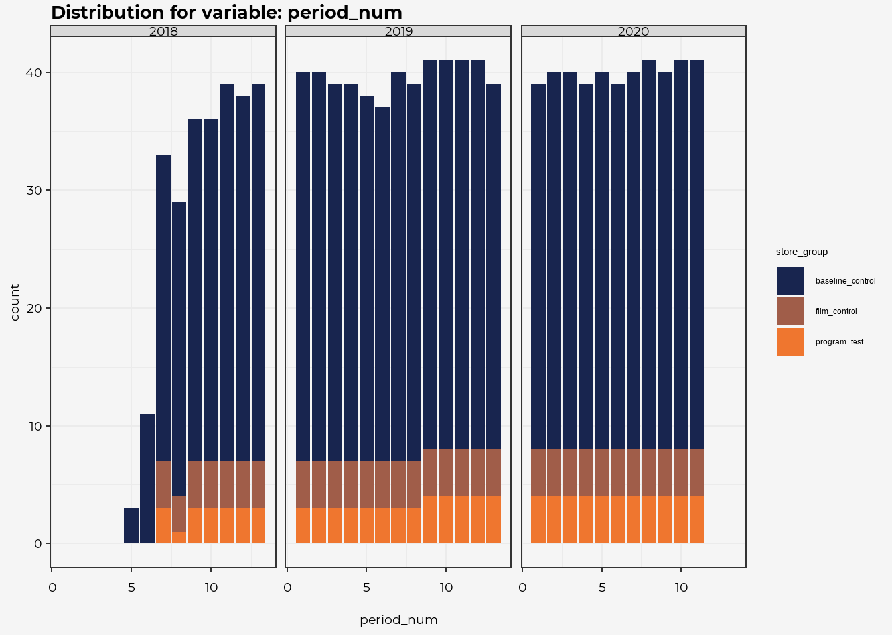
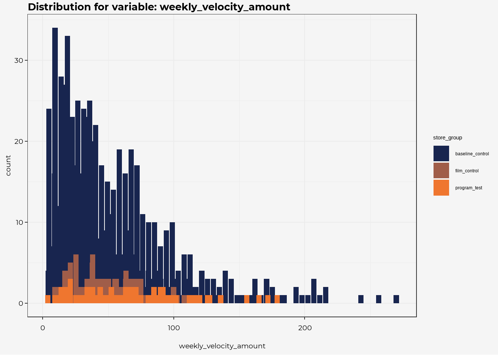
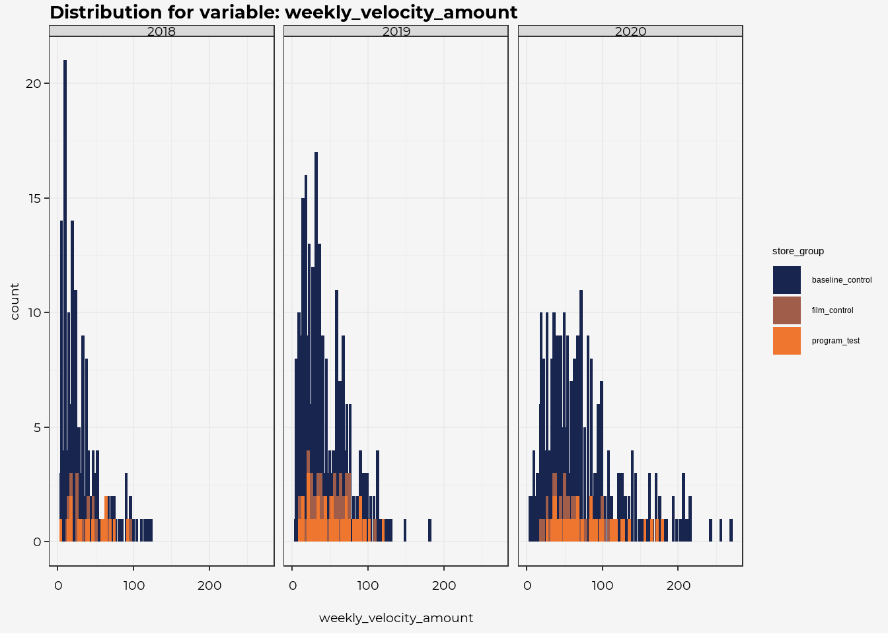
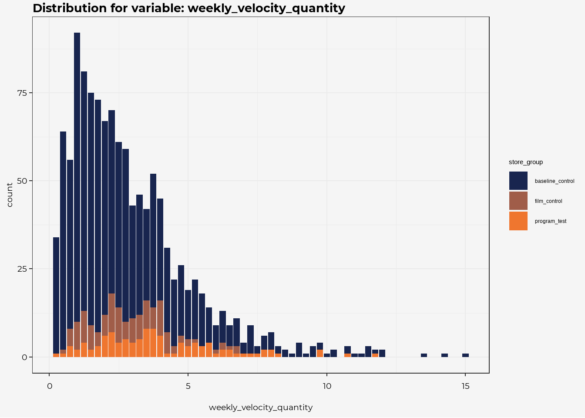
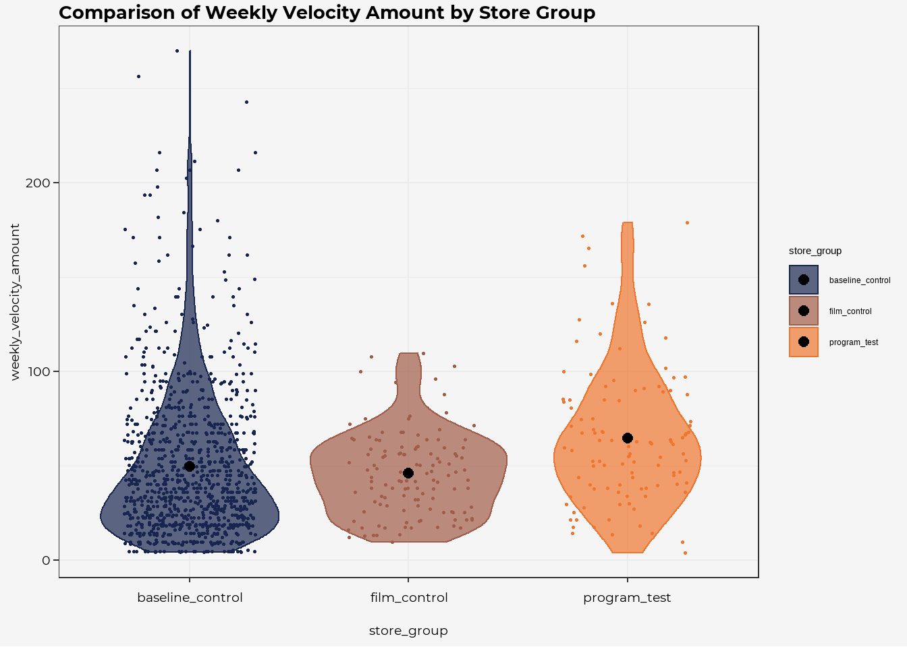
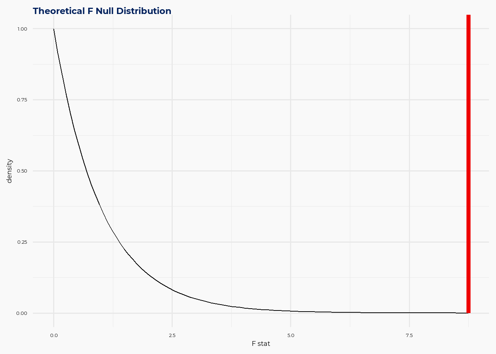
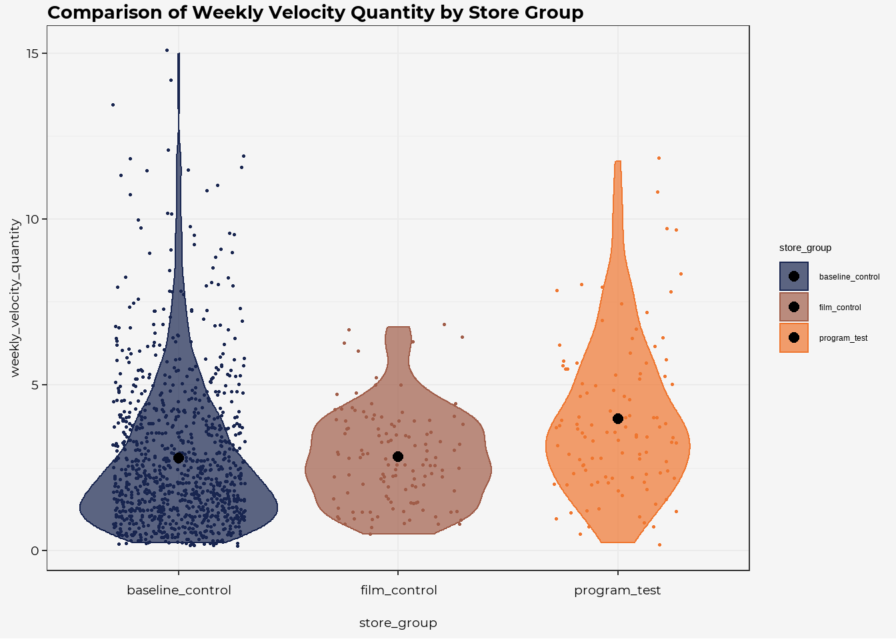
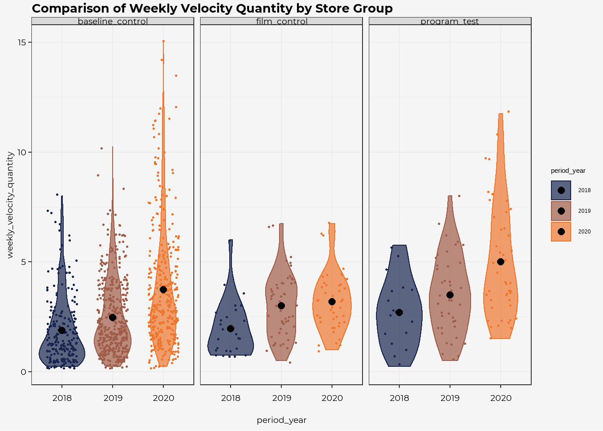
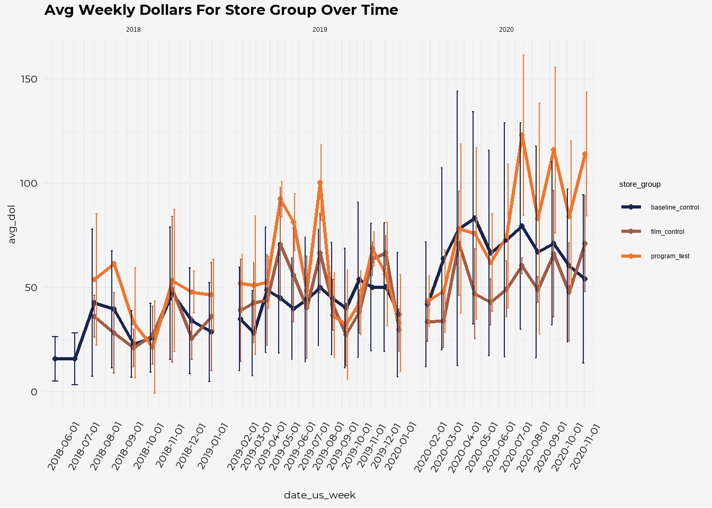
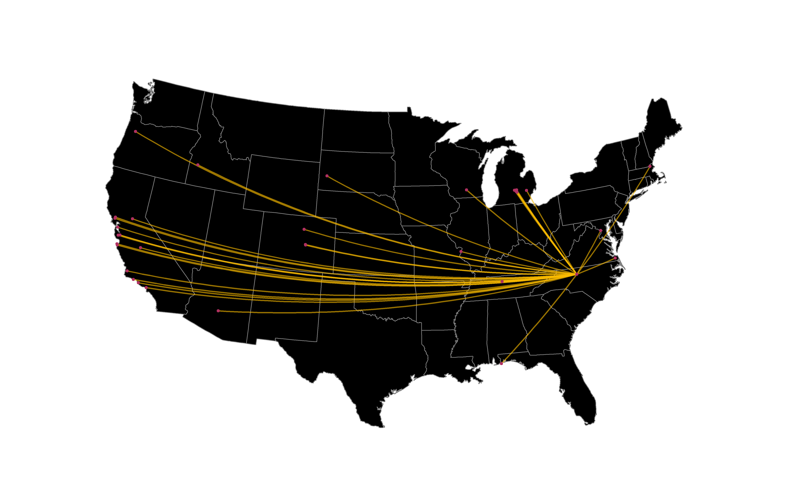

Methodology
Last Updated: 31 January, 2021
Goal
This section is meant to help show my general process around:
- ingesting the dataset
- exploring the results
- developing the cleaned views
I am intentionally not spending a ton of time working to clean up the visuals or extensively documenting the results, but I have enable the “show code” functionality as part of the yaml header for this rmd file (eda.Rmd).
If desired the entirity of the website can be found on github [https://github.com/phildwalker/looma_audition]
Read In Data
dat <- read_csv(here::here("data-raw", "looma_audition_data.csv"))
colnames <- colnames(dat)Data Notes
The csv file provided contains sample data for analysis. We receive raw data at the transaction level, with one row per customer and item purchased, with timestamps. The sample data is an aggregate of this at the “promotional period” level. Each campaign runs for one promotional period at a time. These periods vary between 3 and 5 weeks in length, so we provide sales in this data as “weekly velocity”, meaning average sales per week during each period.
Specifically, the dataset contains these columns:
- store_group : which of the three experimental conditions the store falls in
- store_id : ID unique to a physical store
- promo_period_int : unique promo period number ordered in time (this doesn’t provide information you can’t get from period_num and period_year, but it’s convenient)
- period_num : number of the promo period (there are 13 every year)
- period_year: year the period falls in (along with period_num, unique identifies the promo period)
- weekly_velocity_amount : average weekly dollar sales
- weekly_velocity_quantity : average weekly unit sales
The data provided is all for one featured product from Brewery A. The experiment was run during period number 11 of 2020. Data is provided back to mid-2018, but don’t feel compelled to incorporate it all in your analysis. What data is most relevant is up to you.
Summary of Data
glimpse(dat)## Rows: 1,219
## Columns: 7
## $ store_group <chr> "baseline_control", "baseline_control", "b...
## $ store_id <dbl> 1, 2, 3, 3, 4, 5, 1, 4, 6, 3, 7, 4, 4, 8, ...
## $ promo_period_int <dbl> 46, 46, 50, 62, 63, 64, 65, 66, 68, 68, 69...
## $ period_num <dbl> 7, 7, 11, 10, 11, 12, 13, 1, 3, 3, 4, 5, 7...
## $ period_year <dbl> 2018, 2018, 2018, 2019, 2019, 2019, 2019, ...
## $ weekly_velocity_amount <dbl> 98.68, 120.43, 114.68, 181.65, 112.44, 89....
## $ weekly_velocity_quantity <dbl> 6.75, 7.25, 6.75, 10.25, 6.25, 6.00, 6.75,...Check for missingness
Reviewing the chart below we see that we do not have any concerns about variables with missing data, therefore we will not have to take into consideration ways to mitigate/ adjust for missing data.
naniar::vis_miss(dat)First Pass Review
Distributions of Data
Using purrr to run through the distribution of each variable by store group (as we know that is the main indicator for this analysis).
reviewCol <-
purrr::map(colnames,
~ dat %>% ggplot(aes_string(.x, fill="store_group"))+
geom_bar()+
scale_fill_pdw()+
labs(title = glue::glue("Distribution for variable: {.x}"))+
looma_theme()
# theme(plot.title = element_text(size = 15))
)
# reviewCol
reviewCol[[1]]reviewCol[[2]] + geom_bar(width = 0.0001, alpha = 0.4, color= "black")+ facet_wrap(store_group ~. , ncol = 1)
# the store distribution seems similar for 2019 and 2020
reviewCol[[2]] + geom_bar(width = 0.0001, alpha = 0.4, color= "black")+ facet_grid(store_group ~factor(period_year))
reviewCol[[3]]
reviewCol[[4]]
reviewCol[[4]] + facet_wrap(factor(period_year) ~ ., ncol = 3)
reviewCol[[5]]
# no zero sales... which makes sense, but it means the data is naturally censored
reviewCol[[6]] + geom_bar(width = 4)
reviewCol[[6]] + geom_bar(width = 4)+ facet_wrap(factor(period_year) ~ ., ncol = 3)
reviewCol[[7]]
Avg Velocity Amount
This summary would seem to indicate that the mean of the weekly velocity amount (average weekly dollars in sales) were higher for s
summary <- dat %>%
group_by(store_group) %>%
summarise(avg_amnt = mean(weekly_velocity_amount),
n = n(),
std_amnt = sd(weekly_velocity_amount))
dat %>%
ggplot(aes(store_group, weekly_velocity_amount, fill = store_group, color = store_group))+
geom_jitter(size = 0.5, width = .3)+
geom_violin(alpha=0.7)+
geom_point(data = summary, aes(store_group, avg_amnt), color= "black", size = 2.5)+
labs(title = "Comparison of Weekly Velocity Amount by Store Group")+
scale_fill_pdw()+
scale_color_pdw()+
looma_theme()
summary %>%
gt() %>%
fmt_number(columns = c(2,4), decimals = 2)| store_group | avg_amnt | n | std_amnt |
|---|---|---|---|
| baseline_control | 49.59 | 989 | 39.04 |
| film_control | 45.96 | 123 | 21.98 |
| program_test | 64.55 | 107 | 35.75 |
Using an anova to see if the differences are statistically significant. We would conclude that one or more of the group’s weekly velocity amounts are statisically different
observed_f_statistic <-dat %>%
specify(weekly_velocity_amount ~ store_group) %>%
calculate(stat = "F")
# visualize the theoretical null distribution and test statistic
dat %>%
specify(weekly_velocity_amount ~ store_group) %>%
hypothesize(null = "independence") %>%
visualize(method = "theoretical") +
shade_p_value(observed_f_statistic,
direction = "greater")
# generate the null distribution using randomization
null_distribution <- dat %>%
specify(weekly_velocity_amount ~ store_group) %>%
hypothesize(null = "independence") %>%
generate(reps = 1000, type = "permute") %>%
calculate(stat = "F")
# calculate the p value from the observed statistic and null distribution
p_value <- null_distribution %>%
get_p_value(obs_stat = observed_f_statistic,
direction = "greater")
p_valueAvg Velocity Quantity
This summary would seem to indicate that the mean of the weekly velocity amount (average weekly dollars in sales) were higher for s
summary <- dat %>%
group_by(store_group) %>%
summarise(avg_amnt = mean(weekly_velocity_quantity),
n = n(),
std_amnt = sd(weekly_velocity_quantity))
dat %>%
ggplot(aes(store_group, weekly_velocity_quantity, fill = store_group, color = store_group))+
geom_jitter(size = 0.5, width = .3)+
geom_violin(alpha=0.7)+
geom_point(data = summary, aes(store_group, avg_amnt), color= "black", size = 2.5)+
labs(title = "Comparison of Weekly Velocity Quantity by Store Group")+
scale_fill_pdw()+
scale_color_pdw()+
looma_theme()
summary %>%
gt() %>%
fmt_number(columns = c(2,4), decimals = 2)| store_group | avg_amnt | n | std_amnt |
|---|---|---|---|
| baseline_control | 2.78 | 989 | 2.21 |
| film_control | 2.83 | 123 | 1.41 |
| program_test | 3.97 | 107 | 2.28 |
Using an anova to see if the differences are statistically significant.
observed_f_statistic <-dat %>%
specify(weekly_velocity_quantity ~ store_group) %>%
calculate(stat = "F")
# visualize the theoretical null distribution and test statistic
dat %>%
specify(weekly_velocity_quantity ~ store_group) %>%
hypothesize(null = "independence") %>%
visualize(method = "theoretical") +
shade_p_value(observed_f_statistic,
direction = "greater")# generate the null distribution using randomization
null_distribution <- dat %>%
specify(weekly_velocity_quantity ~ store_group) %>%
hypothesize(null = "independence") %>%
generate(reps = 1000, type = "permute") %>%
calculate(stat = "F")
# calculate the p value from the observed statistic and null distribution
p_value <- null_distribution %>%
get_p_value(obs_stat = observed_f_statistic,
direction = "greater")
p_valueInvestigatings Effect
By Group and by Year
Visually it looks like across conditions, that the sales are increasing YOY.
summary <- dat %>%
mutate(period_year = as.factor(period_year)) %>%
group_by(store_group, period_year) %>%
summarise(avg_amnt = mean(weekly_velocity_quantity),
n = n(),
std_amnt = sd(weekly_velocity_quantity))
dat %>%
mutate(period_year = as.factor(period_year)) %>%
ggplot(aes(period_year, weekly_velocity_quantity, fill = period_year, color = period_year))+
geom_jitter(size = 0.5, width = .3)+
geom_violin(alpha=0.7)+
geom_point(data = summary, aes(period_year, avg_amnt), color= "black", size = 2.5)+
labs(title = "Comparison of Weekly Velocity Quantity by Store Group")+
scale_fill_pdw()+
scale_color_pdw()+
looma_theme()+
facet_wrap(store_group ~ ., ncol =3)
It’s interesting that the film control group doesn’t seem to see the same YOY increase for 2019 -> 2020 as the other two conditions.
dat %>%
mutate(period_year = as.factor(period_year)) %>%
group_by(store_group, period_year) %>%
summarise(avg_amnt = mean(weekly_velocity_quantity),
avg_dol = mean(weekly_velocity_amount)) %>%
ungroup() %>%
pivot_wider(names_from = "period_year", values_from = c("avg_amnt", "avg_dol")) %>%
gt() %>%
fmt_number(columns = 2:7, decimals = 2)| store_group | avg_amnt_2018 | avg_amnt_2019 | avg_amnt_2020 | avg_dol_2018 | avg_dol_2019 | avg_dol_2020 |
|---|---|---|---|---|---|---|
| baseline_control | 1.87 | 2.46 | 3.73 | 33.00 | 43.54 | 67.08 |
| film_control | 1.95 | 3.00 | 3.18 | 31.94 | 48.13 | 51.98 |
| program_test | 2.68 | 3.50 | 5.00 | 43.58 | 56.16 | 81.98 |
Linear model for yr + group
lm_dat <- dat %>%
mutate(period_year = as.character(period_year))
lm.model <- lm(data = lm_dat,
formula = weekly_velocity_quantity ~ 0 + period_year*store_group)
summary(lm.model)##
## Call:
## lm(formula = weekly_velocity_quantity ~ 0 + period_year * store_group,
## data = lm_dat)
##
## Residuals:
## Min 1Q Median 3Q Max
## -3.5000 -1.3716 -0.4794 1.0000 11.2706
##
## Coefficients:
## Estimate Std. Error t value
## period_year2018 1.87156 0.13711 13.650
## period_year2019 2.46301 0.09890 24.905
## period_year2020 3.72940 0.10790 34.564
## store_groupfilm_control 0.08214 0.41301 0.199
## store_groupprogram_test 0.81265 0.48423 1.678
## period_year2019:store_groupfilm_control 0.45485 0.50908 0.893
## period_year2020:store_groupfilm_control -0.63541 0.52474 -1.211
## period_year2019:store_groupprogram_test 0.22434 0.58086 0.386
## period_year2020:store_groupprogram_test 0.45795 0.58246 0.786
## Pr(>|t|)
## period_year2018 <0.0000000000000002 ***
## period_year2019 <0.0000000000000002 ***
## period_year2020 <0.0000000000000002 ***
## store_groupfilm_control 0.8424
## store_groupprogram_test 0.0936 .
## period_year2019:store_groupfilm_control 0.3718
## period_year2020:store_groupfilm_control 0.2262
## period_year2019:store_groupprogram_test 0.6994
## period_year2020:store_groupprogram_test 0.4319
## ---
## Signif. codes: 0 '***' 0.001 '**' 0.01 '*' 0.05 '.' 0.1 ' ' 1
##
## Residual standard error: 2.024 on 1210 degrees of freedom
## Multiple R-squared: 0.6891, Adjusted R-squared: 0.6868
## F-statistic: 298 on 9 and 1210 DF, p-value: < 0.00000000000000022summary(aov(lm.model))## Df Sum Sq Mean Sq F value Pr(>F)
## period_year 3 10846 3615 882.26 < 0.0000000000000002 ***
## store_group 2 116 58 14.16 0.000000831 ***
## period_year:store_group 4 30 7 1.80 0.126
## Residuals 1210 4959 4
## ---
## Signif. codes: 0 '***' 0.001 '**' 0.01 '*' 0.05 '.' 0.1 ' ' 1Trends over time
dat <-
dat %>%
mutate(period_yr_num = as.numeric(paste0(as.character(period_year), ".", as.character(period_num))))Are stores represented evenly across the time period?
dat %>%
count(store_id, store_group, period_year) %>%
pivot_wider(names_from= period_year, values_from = n) %>%
DT::datatable(rownames = F, filter = c("top"))Average Sales Dollars by Period
2018… maybe just had some interest from the “innovation”
2019 is interesting, and would follow my bias the most with the film_control and program_test following similar trends at different magnitudes. 2020 is odd, where it seems to be having an entirely different pattern than expected, with average sale dollars spiking up for the second half of the year in the “program_test” condition.
dat %>%
mutate(date_us_week = as.Date(paste(period_year, period_num * 4, 1), format = "%Y %U %u")) %>%
# mutate(period_year = as.factor(period_year)) %>%
group_by(date_us_week,period_year, store_group ) %>%
summarize(avg_amnt = mean(weekly_velocity_quantity),
avg_dol = mean(weekly_velocity_amount),
sd_dol = sd(weekly_velocity_amount)) %>%
ggplot(aes(date_us_week, avg_dol, color = store_group))+
geom_line(size = 1.2)+
geom_point(size = 1.5)+
geom_errorbar(aes(ymin = avg_dol - sd_dol, ymax = avg_dol + sd_dol), width = 9, position = "dodge")+
labs(title = "Avg Weekly Dollars For Store Group Over Time")+
scale_fill_pdw()+
scale_color_pdw()+
scale_x_date(date_breaks = "1 months")+
looma_theme()+
facet_wrap(period_year ~ ., ncol =3, scales = "free_x")+
theme(axis.text.x = element_text(angle = 60))+
NULL
Is there a potential store dependency?
Not sure if we can know if this is the case or not because we only see stores in one condition or the other.
Phil Walker
Data Scientist
Greensboro, NC
